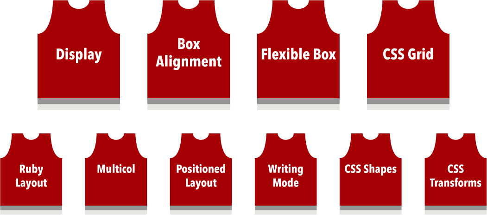
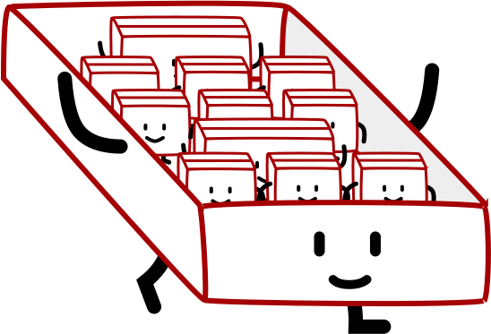
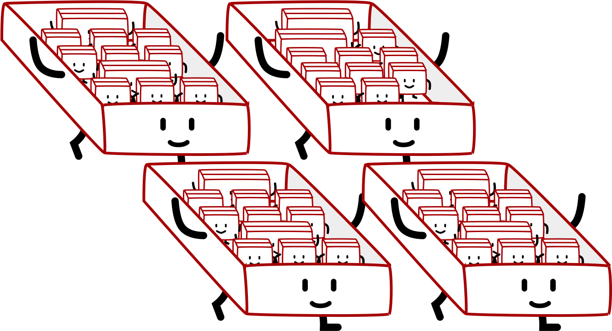
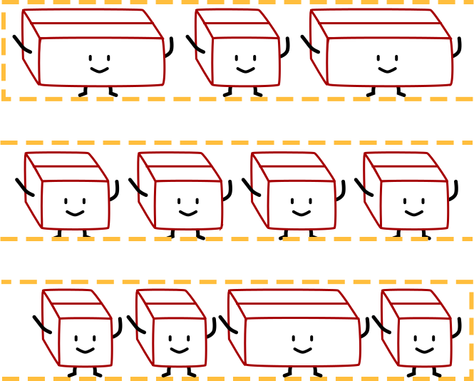
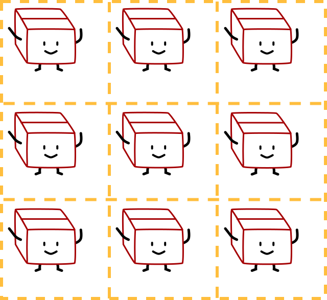
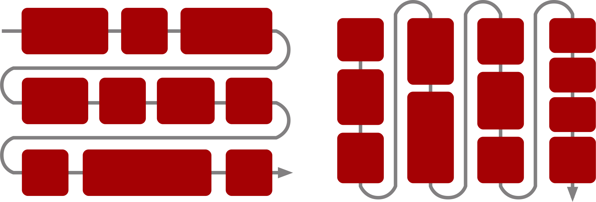
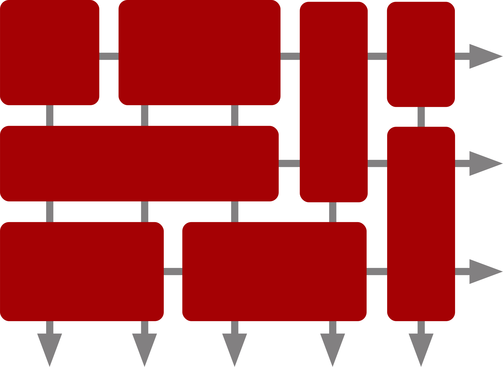

新时代CSS布局

jing74737871
🇲🇾
🏀
👩💻
📝
🦊

🥑 开发大使 🥑

为什么纵向比横向难排？
🙆
🤷
_______________________________________ | | | margin (transparent) | | _________________________________ | | | | | | | border | | | | ___________________________ | | | | | | | | | | | padding | | | | | | _____________________ | | | | | | | | | | | | | | | content | | | | | | | |_____________________| | | | | | |___________________________| | | | |_________________________________| | |_______________________________________| | element width | | box width |
CSS布局部队
等属性…


CSS显示模块
内部显示类型
定义了元素内子元素的布局方式
外部显示类型
定义了元素怎样参与流式布局的处理
none |
— |
subtree omitted from box tree |
contents |
— |
element replaced by content in box tree |
table |
block table |
block-level table wrapper box containing table box |
inline-table |
inline table |
inline-level table wrapper box containing table box |
list-item |
block flow list-item |
block box with additional marker box |
inline list-item |
inline flow list-item |
inline box with additional marker box |
run-in |
run-in flow |
run-in box (inline box with special box-tree-munging rules) |
flex |
block flex |
block-level flex container |
inline-flex |
inline flex |
inline-level flex container |
ruby |
inline ruby |
inline-level ruby container |
block ruby |
block ruby |
block box containing ruby container |
grid |
block grid |
block-level grid container |
inline-grid |
inline-grid |
inline-level grid container |
block |
block flow |
block-level block container |
flow-root |
block flow-root |
block-level block container that establishes a new block formatting context (BFC) |
inline |
inline flow |
inline box |
inline-block |
inline flow-root |
inline-level block container |
Flex简写及关键字
[ <’flex-grow’> <’flex-shrink’>? || <’flex-basis’> ] flex: initial |
flex: 0 1 auto不能生长，但是缺乏空间时可以缩小 |
flex: auto |
flex: 1 1 auto依照可用空间平均伸缩 |
flex: none |
flex: 0 0 auto完全不伸缩，简直是僵化 |
flex: <positive-number> |
flex: <positive-number> 1 0能屈能伸，属性值断定生长的比例 |
自动margin是你的好友

自动margin是你的好友
为什么块格式自动margin不垂直居中元素？
If both margin-left and margin-right are auto, their used values are equal, causing horizontal centring.
—CSS2 Visual formatting model details: 10.3.3
If
margin-top, ormargin-bottomareauto, their used value is0.
—CSS2 Visual formatting model details: 10.6.3
容器–项目的「父子」关系
CSS盒式对齐模块
Flexbox
align-contentjustify-contentalign-itemsalign-self
justify-items/justify-self 在flex项目是用不上的。
Grid
align-contentjustify-contentalign-itemsalign-selfjustify-itemsjustify-self
justify-content 和 align-content
A
B
C
D
justify-content 和 align-content
1一
2二
3三
4四
5五
6六
7七
8八
9九
10十
11十一
12十二
13十三
14十四
15十五
16十六
17十七
18十八
19十四
20二十
justify-self 和 align-self
A
B
C
D
justify-items 和 align-items
A
B
C
D
align-items 和 align-self
1一
2二
3三
4四
5五
6六
7七
8八
9九
10十
11十一
12十二
13十三
14十四
15十五
16十六
17十七
18十八
19十四
20二十
Grid或者Flexbox?
问错了!
Flexbox（单维）
Grid（二维）
Grid和Flex合作愉快


百分比的局限
一致性的伸缩率
以内容为主的尺寸计算方式
外部尺寸
以元素的上下文为主，忽视元素内容
这是个含有内容的块格式盒子。我们可以利用它来理解extrinsic sizing的原理。我们把它的宽度设为700px，把高度设为300px。当内容超出可用空间时，就会导致内容溢流的现象。
内部尺寸
以元素的内容为主，忽视元素上下文
用
min-content为width取值用
max-content为width取值独特的灵活性尺寸
- fr
- auto
- minmax()
- fit-content()
fit-content(400px)等于minmax(auto, max-content)，但是终宽度不能超出400px。
fr对比auto
绿色：fr，蓝色：auto
max-content对比固定width
灰色：max-content，粉红色：400px
fit-content对比minmax()
橙色：fit-content(200px)，黄色：minmax(200px, 400px)
支持旧款浏览器
利用@supports，本地CSS功能检测
.selector {
/* Styles that are supported in old browsers */
}
@supports (property:value) {
.selector {
/* Styles for browsers that support the specified property */
}
}致谢
谢谢CSS女神/攀岩高手，皋玮，做我的编辑。
参考链接
- WorldWideWeb 浏览器
- Before Netscape: the forgotten Web browsers of the early 1990s
- Cascading Style Sheets, level 1 (W3C 推荐标准 17 Dec 1996)
- CSS属性列表
- CSS显示模块 Level 3
- CSS弹性盒式布局模块 Level 1
- CSS2.1: 10 视觉格式化模型细节
- CSS盒式对齐模块 Level 3
- CSS Intrinsic & Extrinsic Sizing Module Level 3
- Cascading Web Design with Feature Queries
- 渐进增强布局
谢谢!

 jing74737871
jing74737871

拉丁字体是由 Olivier Gourvat 设计的 Magnetic Pro